유통관리사-2급 (2014-11-16 기출문제)
1과목: 유통물류일반
1. 유통경로구조의 결정이론과 그에 대한 설명으로 옳지 않은 것은?
- 연기-투기이론 : 누가 재고보유에 따른 위험을 감수하는가?
- 기능위양이론 : 누가 어떤 기능을 얼마나 효율적으로 수행하는가?
- 거래비용이론 : 기업이 어떻게 유통경로구조의 수평적 통합을 통해 경로구성원들과의 시너지 효과를 창출하는가?
- 게임이론 : 경쟁관계에 있는 구성원들이 어떻게 자신의 이익을 극대화하는가?
- 대리이론 : 의뢰인에게 최선의 성과를 가져다주는 효율적인 계약인가?
(정답률: 69%)

2. 한국 자전거는 자전거 조립을 하는데, 연간부품을 1,000개 사용하고, 1회 주문비가 200원이며, 재고단위당 40원의 유지비가 발생한다고 한다. 경제적 주문량은 얼마인가?
- 10개
- 100개
- 4,000개
- 50개
- 250개
(정답률: 64%)
3. 제품이나 상품을 제공하는 '공급자 선정'시 고려하는 요소로써 가장 옳지 않은 것은?
- 품질과 품질보증
- 유연성
- 가격
- 리드타임
- 공급자 수
(정답률: 66%)
4. “매출채권을 대출담보로 이용하는 대신에 매출채권을 직접 매각하여 채권에 투자된 자금을 회수하는 것”에 적합한 용어는 무엇인가?
- 어음할인
- 팩토링
- 전환사채
- 채권담보
- 채권상쇄
(정답률: 38%)
5. 판매 시까지 취급 상품의 소유권을 가지고 독립적으로 대부분의 도매기능을 수행하는 도매상의 유형에 가장 적합한 것은?
- 상인도매상
- 대리점
- 브로커
- 판매지점(sales branch)
- 판매사무소(sales office)
(정답률: 80%)
6. 유통경로에서 전방기능흐름만으로 묶인 것은?
- 물적 소유 이동, 소유권 이동, 판매 촉진
- 소유권 이동, 주문, 대금결제
- 주문, 협상
- 금융, 위험부담
- 물적 소유 이동, 금융, 대금결제
(정답률: 60%)
7. 고객이 원하는 유통서비스 수준으로 가장 옳지 않은 것은?
- 구매 편의성 : 소매점포망 확대
- 상품 구색 : 상품 종류의 다양성
- 정보화 : 영업사원 교육훈련
- 배달시간 : 신속한 구매시간
- 구매단위의 크기 : 소량구매
(정답률: 74%)
8. 최근 일어나고 있는 유통경로간의 통합 유형 중 다른 하나는?
- 배달된 카탈로그를 본 민정은 인터넷사이트에 접속해서 원피스를 구매하였다.
- 인터넷사이트에 접속해 추리소설을 구매한 서연은 퇴근길에 서점에 들러 수령하였다.
- 카탈로그를 보고 충동이 생긴 범수는 매장에 들러 자동차를 시승, 구매하였다.
- 홈쇼핑을 통해 신발을 구매한 인숙은 지정된 인근 편의점을 통해 무료로 반품하였다.
- 홈쇼핑을 통해 청소기를 구매한 민수는 제휴된 근처 마트에서 A/S를 받을 수 있었다.
(정답률: 42%)
9. 운송수단에 대한 설명으로 가장 옳지 않은 것은?
- 파이프라인의 경우 비교적 비용이 저렴하고 특정형태의 상품만을 수송하는데 유리하다.
- 항공수송은 부피가 작고 부패성이 높은 고가의 상품인 경우 유용하다.
- 해상운송과 트럭을 함께 사용하는 수송방식을 피기백(piggy back)방식이라 한다.
- 버디백(birdy back)방식은 트럭과 항공운송을 결합한 방식이다.
- 트럭은 일반적으로 소량의 상품을 단거리 수송하는데 효과적이다.
(정답률: 65%)
10. 구매성과관리에 대한 설명으로 가장 옳지 않은 것은?
- 단기 업적 중심만으로 제한하여 실시한다.
- 가격, 시간, 납기, 대응성 등의 측정 지표를 사용한다.
- 성과와 활동을 구분하여 평가한다.
- 성과 평가 결과의 피드백을 통해 문제 재발을 사전에 방지할 수 있게 한다.
- 공급자 성과 및 이해관계자 만족도 외에도 정부나 사회, 내부고객 만족도 포함한다.
(정답률: 72%)
11. 기업이 물류 등을 아웃소싱하는 이유로 가장 옳지 않은 것은?
- 고정비용을 줄여서 유연성을 획득할 수 있다.
- 규모의 경제 효과를 누릴 수 있다.
- 혁신적인 기술의 혜택을 볼 수 있다.
- 제품의 원산지 효과를 누릴 수 있다.
- 분업의 원리를 통해 이득을 얻을 수 있다.
(정답률: 57%)
12. 다른 할인점에 비해 회원제 창고형 할인점(membership wholesale club : MWC)이 갖는 특징으로 가장 적합한 것은?
- 고객서비스 수준은 최소로 제공한다.
- 저비용의 소규모 소매시설이라 볼 수 있다.
- 상품진열은 주로 수평의 공간위주로 활용한다.
- 보유재고를 최소한으로 한다.
- 상품 하나하나마다 가격표를 개별로 각각 부착한다.
(정답률: 60%)
13. 상품매입과 관련된 법적, 윤리적 문제의 하나로써 사고자 하는 상품을 구입하기 위해서 사고 싶지 않은 상품까지도 소매업체가 구입하도록 하는 공급업체와 소매업체간에 맺는 협정을 무엇이라고 하는가?
- 독점거래협정(exclusive dealing agreement)
- 역청구(chargebacks)
- 회색시장(gray-market)
- 역매입(buybacks)
- 구속적 계약(tying contract)
(정답률: 82%)
14. 박스 안의 ( )에 들어갈 올바른 단어를 순서대로 나열한 것은?
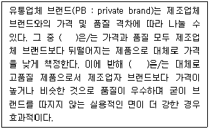
- Premium lite brand / Premium PB
- Premium PB / Premium lite brand
- Copycat brand / Generics
- Generics / Premium PB
- Premium PB / Copycat brand
(정답률: 54%)
15. 박스 안에서 설명하고 있는 수직적 유통시스템(VMS)은?
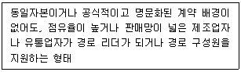
- 기업형 VMS
- 리더형 VMS
- 자유형 VMS
- 계약형 VMS
- 관리형 VMS
(정답률: 34%)
16. 박스 안의 ( )에 들어갈 단어로 올바르게 짝지어진 것은?
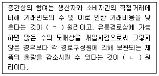
- ㄱ-분업 ㄴ-집중준비
- ㄱ-변동비 최소 ㄴ-분업
- ㄱ-총거래수 최소 ㄴ-분업
- ㄱ-분업 ㄴ-변동비 우위
- ㄱ-총거래수 최소 ㄴ-집중준비
(정답률: 53%)
17. 소매점의 경영지표 중 안정성과 관련이 가장 먼 것은?
- 자기자본비율
- 유동비율
- 매출원가 대 매출액비율
- 매입채무 대 재고자산비율
- 순운전자본 대 총자본비율
(정답률: 42%)
18. 영업사원의 성과는 크게 과정지표와 결과지표로 나뉜다. 다음 중 영업사원의 결과지표로 옳지 않은 것은?
- 신규계정수
- 탈락계정수
- 주문건수
- 공헌마진
- 순추천지수
(정답률: 49%)
19. 기업 구성원의 동기부여에 대한 설명으로 옳은 것은?
- 프레드릭 허즈버그는 책임감, 인정과 같은 요인이 결핍되면 직무불만족을 야기하지만 이들이 충족된다고 해서 동기가 부여되는 것은 아니라고 주장하였다.
- 동기를 부여하는 직무확충전략에는 직무확대와 직무평가가 있다.
- Y이론에 의하면 사람들은 일하기를 싫어하고 피하려고 노력한다고 가정한다.
- 빅터 브룸의 공정성이론에 의하면 사람들은 다른 종업원과 자신의 임금을 늘 비교한다고 주장한다.
- 기대이론에 의하면 긍정적 강화요인으로 인정, 임금인상이 있고, 부정적 강화요인으로는 질책, 해고 등이 있다.
(정답률: 58%)
20. 제4자 물류에 대한 설명으로 올바르게 짝지어진 것은?
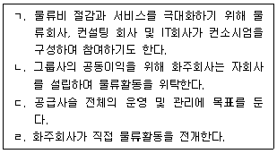
- ㄱ, ㄴ
- ㄴ, ㄷ
- ㄷ, ㄹ
- ㄱ, ㄷ
- ㄴ, ㄹ
(정답률: 56%)
21. 물류시스템 설계에 대한 전략적 계획절차를 나열한 것이다. 올바른 순서대로 나열한 것은?
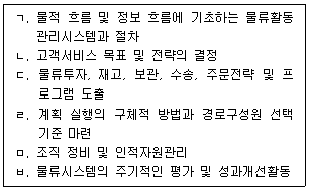
- ㄴ→ㄱ→ㄷ→ㄹ→ㅂ→ㅁ
- ㄴ→ㄷ→ㄱ→ㅁ→ㄹ→ㅂ
- ㄴ→ㅁ→ㄹ→ㄱ→ㄷ→ㅂ
- ㄴ→ㄹ→ㄱ→ㄷ→ㅂ→ㅁ
- ㄴ→ㄷ→ㄹ→ㄱ→ㅂ→ㅁ
(정답률: 39%)
22. 소매점포 믹스의 구성요소가 아닌 것은?
- 입지
- 포지션
- 마진과 회전율
- 촉진
- 서비스 수준
(정답률: 40%)
23. 기업의 물류관리와 공급사슬관리에 대한 설명으로 틀린 것은?
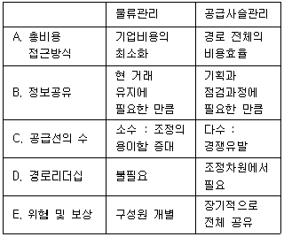
- A
- B
- C
- D
- E
(정답률: 55%)
24. 유통산업발전법상 유통산업의 경쟁력 강화를 위한 내용으로 틀린 것은?
- 정부는 재래시장의 활성화에 필요한 시책을 수립·시행하여야 하고, 정부 또는 지방자치단체의 장은 이에 필요한 행정적·재정적 지원을 할 수 있다.
- 산업통상자원부장관은 무점포판매업의 발전시책을 수립·시행할 수 있고, 그 내용으로 전문인력의 양성에 관한 사항 등을 포함해야 한다.
- 정부 또는 지방자치단체의 장은 중소유통기업의 구조개선 및 경쟁력 강화에 필요한 시책을 수립·시행할 수 있고, 이에 필요한 행정적·재정적 지원을 할 수 있다.
- 산업통상자원부장관은 중소유통공동소매물류센터의 설립·운영의 발전시책을 수립·시행할 수 있다.
- 산업통상자원부장관은 유통산업의 경쟁력을 강화하기 위하여 체인사업의 발전시책을 수립·시행할 수 있다.
(정답률: 23%)
25. 유통기업들이 다각화를 추구하는 이유로 거리가 먼 것은?
- 운영적 범위의 경제(핵심역량, 공유활동)를 실현
- 규모의 경제를 실현
- 재무적 범위의 경제(위험감소, 세금혜택)를 실현
- 반경쟁적 범위의 경제(복수시장경쟁, 시장지배력우위)를 실현
- 종업원의 동기(경영보상 극대화)를 실현
(정답률: 36%)
2과목: 상권분석
26. Reilly의 소매인력법칙에 대한 설명으로 옳지 않은 것은?
- 중심지이론에 비해 소비자의 구매행위 및 인구이동 등 여러 분야에 적용가능하다.
- 셋 이상의 상권을 설정하는 경우에는 적용이 어렵다.
- 소비자들이 지각하는 거리와 실제거리가 차이가 나는 경우에 대한 반영이 없다.
- 교통혼잡에 따른 시간거리나 매장의 크기, 상품구색도 고려하고 있어 유용하다.
- 주요도로 이외의 다른 경로로 이동하는 경우에는 거리보다 시간을 활용하는 것이 좋을 수 있다.
(정답률: 37%)
27. Reilly의 소매인력법칙을 활용하여 중소도시에서 인근 대도시 A, B로 흡인되는 구매력의 크기를 확인하고자 할 때 필요한 정보들로만 묶인 것은?
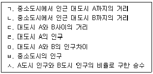
- ㄱ, ㄴ, ㄷ
- ㄱ, ㄴ, ㄹ
- ㄱ, ㄷ, ㄹ
- ㄱ, ㄹ, ㅁ
- ㄱ, ㅂ, ㅅ
(정답률: 52%)
28. 점포상권의 범위와 유통전략의 수단 사이에 존재하는 관계에 대한 설명으로 옳지 않은 것은?
- 유통전략 수단의 내용이나 수준이 동일한 조건인 경우에는 교통수단의 활용 용이성 정도가 상권의 크기를 결정할 수 있다.
- 같은 상업지구에 위치한 경우에는 점포의 규모에 따라 점포상권의 차이가 존재한다.
- 점포의 규모가 비슷한 경우에는 취급하는 상품의 종류 및 특성에 따라 점포상권의 범위가 차이가 난다.
- 소비자의 이동거리는 상품구색의 다양성 정도에 따라 정비례하여 지속적으로 증가한다.
- 편의품 위주의 상품계열을 취급하는 소규모 점포보다 다양한 상품구색을 갖추고 있는 대규모 점포의 상권범위가 더 넓다.
(정답률: 73%)
29. 유통집적시설을 설계할 때 유리한 입지조건으로 거리가 먼 것은?
- 누구나 찾아올 수 있는 핵점포가 있는 것이 유리하다.
- 자동차 고객을 대상으로 하는 간선도로망을 갖추는 것이 유리하다.
- 인구가 충분히 증가할 가능성이 있고, 잠재적인 성장 가능성이 높은 곳이 좋다.
- 다수의 편의품 판매점포를 입점시키는 것이 유리하다.
- 주차장을 구비하여 도보상권 뿐만 아니라 차량접근성도 고려해야 한다.
(정답률: 70%)
30. 장기적 관점에서 상권의 수요와 관련이 있는 요소들로만 묶인 것은?
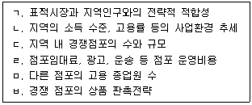
- ㄱ, ㄴ
- ㄷ, ㄹ
- ㄹ, ㅁ
- ㄷ, ㅂ
- ㅁ, ㅂ
(정답률: 61%)
31. 쇼핑센터 내에서 점포의 위치를 결정하는 경우에 대한 설명으로 옳지 않은 것은?
- 취급 상품이 고객의 충동적인 구매 성향을 유발하는지를 감안하여 점포 위치를 정한다.
- 고객은 전문품과 같이 상품구매에 대한 목적이 뚜렷하면 점포위치에 상관없이 점포를 찾기도 한다.
- 의류와 같은 선매품 판매 점포는 비교점포들이 많이 몰려있는 장소가 유리하다.
- 목적점포는 매장 내 가장 좋은 위치에 입점하여야 한다.
- 비슷한 표적시장을 가지고 있는 점포들은 서로 가까이 위치시키는 것이 좋다.
(정답률: 56%)
32. 자유입지중 주변에 인접 점포가 없는 고립된 점포입지가 갖는 장점으로 가장 적합한 것은?
- 항상 유동인구가 많아 상대적으로 많은 잠재고객이 존재한다.
- 고객을 유인하기 위해서는 대형점포보다 소형점포를 개설하는 것이 더 유리하다.
- 점포의 개점 및 운영에 관계되는 비용은 다른 위치의 점포에 비해 항상 적게 발생한다.
- 일반적으로 점포의 가시성, 낮은 임대료, 넓은 주차공간 등에서 유리하다.
- 다른 위치의 점포에 비해 광고 및 판촉비용이 상대적으로 낮게 발생한다.
(정답률: 73%)
33. 상권분석 기법들에 관련한 설명으로 옳지 않은 것은?
- 중심지이론에 의하면 최대도달거리보다 최소수요 충족거리가 큰 것이 바람직하다.
- 체크리스트법과 유추법은 기술적방법(descriptive method)에 속한다.
- CST map은 점포간의 상권의 잠식상태를 표현하는데 쓰일 수 있다.
- 확률적 점포선택 모델에서 특정점포의 효용은 점포의 매력도를 나타낸다.
- Reilly의 소매인력법칙에서 실제거리와 소비자가 지각하는 거리는 일치하지 않을 수 있다.
(정답률: 38%)
34. 기존 점포에 대한 상권분석에서 이용할 수 있는 2차 자료(secondary data)에 해당하지 않는 것은?
- 정부의 인구통계자료 및 세무자료
- 각종 유통기관의 발표자료
- 경제관련 연구소의 발표자료
- 각종 뉴스 및 기사자료
- 점포 이용자에 대한 설문조사자료
(정답률: 68%)
35. 소매포화지수(IRS)와 시장성장잠재력지수(MEP)에 대한 설명으로 옳은 것은?
- 소매포화지수는 한 시장지역내에서 특정 소매업태의 소비자 1인의 잠재수요크기이다.
- 시장성장잠재력지수는 지역시장이 현재 창출하고 있는 시장수요측정 지표이다.
- 소매포화지수가 크면 시장의 포화정도가 높아 아직 경쟁이 치열하지 않음을 의미한다.
- 소매포화지수가 작을수록 신규점포에 대한 시장잠재력이 높다고 볼 수 있다.
- 상권내 거주자들의 타지역으로의 쇼핑(outshopping) 정도가 높을수록 시장성장잠재력지수가 커진다.
(정답률: 36%)
36. 박스 안에서 설명하고 있는 원리에 의해 입지를 올바르게 분류한 것은?
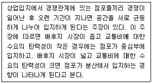
- 이용목적에 따른 분류 - 적응형입지, 목적형입지, 생활형입지
- 점포유형별 분류 - 고객창출형입지, 근린고객의존형, 통행량의존형
- 상권범위에 따른 분류 - 1급지(A급지), 2급지(B급지), 3급지(C급지)
- 공간균배에 따른 분류 - 집심성입지, 집재성입지, 산재성입지
- 소비자구매습관에 따른 분류 - 편의품점입지, 선매품점입지, 전문품점입지
(정답률: 55%)
37. 어느 시장지역 내 거주지 i에서 소비자가 이용하는 쇼핑센터까지의 거리와 쇼핑센터의 매장면적이 다음 표와 같다고 할 때, 거주지 i에서 각 쇼핑센터를 방문할 확률을 Huff모형에 의해 구할 때 가장 방문확률이 낮은 쇼핑센터와 방문확률은?(문제 오류로 가답안 발표시 5번으로 발표되었지만 확정답안 발표시 모두 정답처리 되었습니다. 여기서는 가답안인 5번을 누르면 정답 처리 됩니다.)
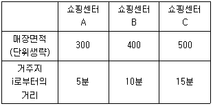
- 쇼핑센터 A, 0.10
- 쇼핑센터 B, 0.22
- 쇼핑센터 B, 0.12
- 쇼핑센터 C, 0.22
- 쇼핑센터 C, 0.12
(정답률: 67%)
38. 대형 소매점포가 어떤 지역에 신규출점을 할 경우 입지분석의 일반적 과정은?
- 부지분석(site analysis) - 지구분석(area analysis) - 지역분석(regional analysis)
- 부지분석(site analysis) - 지역분석(regional analysis) - 지구분석(area analysis)
- 지역분석(regional analysis) - 지구분석(area analysis) - 부지분석(site analysis)
- 지역분석(regional analysis) - 부지분석(site analysis) - 지구분석(area analysis)
- 지구분석(area analysis) - 지역분석(regional analysis) - 부지분석(site analysis)
(정답률: 67%)
39. 상품 구매를 위해 점포를 방문한 소비자를 대상으로 상권분석에 필요한 자료를 수집하는 방법으로 알맞게 짝지어진 것은?
- 점두조사법, 고객점표법
- 방문조사법, 고객점표법
- 방문조사법, 내점객조사법
- 내점객조사법, 점두조사법
- 고객점표법, 내점객조사법
(정답률: 46%)
40. 중심업무지구(CBD)이기 때문에 발생하는 상권특성에 대한 설명으로 옳지 않은 것은?
- 상권의 범위가 좁다.
- 접근성이 좋다.
- 대형 고층건물이 밀집된다.
- 주야간의 인구차이가 있다.
- 핵심지구(core)와 주변지구(frame)로 구별된다.
(정답률: 58%)
41. 상권분석 방법들 중에서 특정 입지의 매력도를 점수로 평가할 수는 있지만 매출액을 추정하기 어려운 방법은?
- 체크리스트법
- 유추법
- 허프 모델
- 수정 허프 모델
- 회귀분석법
(정답률: 74%)
42. 부지의 매력도를 평가하는 일반적 기준으로 옳지 않은 것은?
- 일반적으로 경사지보다는 평지가 고객 접근성에 유리하지만, 부지의 가시성 때문에 경사지를 선호하는 경우도 있다.
- 접근성을 평가하기 위해서 주변의 버스노선 수, 지하철역과의 거리를 고려한다.
- 직사각형 점포의 경우 동일 면적이라면 도로와 접한 접면길이(폭)보다 접면에서 후면까지의 길이(깊이)가 긴 형태가 좋다.
- 곡선형 자동차 도로에서는 커브의 안쪽보다는 바깥쪽 점포가 유리하다.
- 인스토어형 점포는 에스컬레이터, 주차장 출입구 등 고객유도시설에 인접하면 좋다.
(정답률: 52%)
43. 특정지역 상권의 전반적인 수요를 평가하는 도구로 활용되는 구매력지수(BPI)에 대한 설명으로 옳지 않은 것은?
- 지역상권 수요에 영향을 미치는 핵심변수를 선정하고, 이에 일정한 가중치를 부여하여 지수화한 것을 의미한다.
- 전체 인구에서 해당 지역 인구가 차지하는 비율
- 전체 매장면적에서 해당 지역의 매장면적이 차지하는 비율
- 전체 가처분소득(또는 유효소득)에서 해당 지역의 가처분소득(또는 유효소득)이 차지하는 비율
- 전체 소매매출에서 해당 지역의 소매매출이 차지하는 비율
(정답률: 53%)
44. 박스 안의 경우를 Reilly법칙으로 계산한 결과로 옳은 것은?
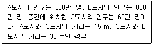
- C도시의 인구 60만 명 중 20만 명이 A도시로 쇼핑을 하러 간다.
- C도시의 인구 60만 명 중 25만 명이 A도시로 쇼핑을 하러 간다.
- C도시의 인구 60만 명 중 30만 명이 A도시로 쇼핑을 하러 간다.
- C도시의 인구 60만 명 중 35만 명이 A도시로 쇼핑을 하러 간다.
- C도시의 인구 60만 명 중 40만 명이 A도시로 쇼핑을 하러 간다.
(정답률: 40%)
45. 컴퓨터를 이용한 지도작성(mapping)체계와 데이터베이스 관리시스템의 결합을 통해 공간데이터의 수집, 생성, 저장, 분석, 검색, 표현 등의 다양한 기능을 기반으로 상권분석에 활용되고 있는 것은?
- AI
- POS
- EDI
- GIS
- DBMS
(정답률: 67%)
3과목: 유통마케팅
46. 판매촉진지원금에 대한 설명으로 올바르게 짝지어진 것은?
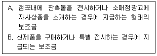
- A: 물량비례보조금, B: 거래보조금
- A: 광고보조금, B: 물량비례보조금
- A: 거래보조금, B: 리베이트보조금
- A: 머천다이징보조금, B: 제품진열보조금
- A: 판촉보조금, B: 재고보호보조금
(정답률: 59%)
47. 소매업체가 유행성 상품 카테고리를 예측하는 데 활용할 수 있는 정보로 가장 옳지 않은 것은?
- 전년도 매출자료
- 촉진효과정보
- 유행과 추세에 대한 정보
- 벤더(공급업체)가 제공하는 정보
- 시장조사
(정답률: 27%)
48. 유통경로에서 발생하는 갈등을 관리하는 행동적 방식으로 가장 옳지 않은 것은?
- 문제해결
- 설득
- 협상
- 협회 공동가입
- 중재
(정답률: 81%)
49. 마케팅조사에 대한 설명으로 옳지 않은 것은?
- 할당표본이란 모집단에 포함된 조사대상들의 명단이 기재된 리스트를 할당하는 것이다.
- 소매점들을 매출액에 따라 대형, 중형, 소형으로 나눈 다음, 각 소집단으로부터 표본을 무작위로 추출하는 경우는 층화표본추출에 해당한다.
- 표본의 크기가 표본의 대표성을 보장해 주는 것은 아니다.
- 현재 일어나고 있는 유통현상을 보다 정확하게 이해하려는 목적의 조사는 기술적 조사에 해당한다.
- 인과적 조사를 위해서는 엄격한 실험설계를 하는 것이 바람직하다.
(정답률: 21%)
50. 유통경로 설계 시 표적시장을 결정하는 시장요인으로 가장 옳지 않은 것은?
- 지리적 지역당 구매자 또는 잠재구매자의 수인 시장밀도
- 시장의 규모인 구매자 및 잠재구매자의 수
- 시장의 지리적 위치와 범위
- 시장내 물류, 배송업체의 수
- 소비자의 구매시기, 장소, 방법, 구매주체 등 시장행동 변수
(정답률: 49%)
51. 다속성 태도모형에 기초한 소매점포의 선택전략으로 가장 옳지 않은 것은?
- 소매점포의 실적에 대한 고객의 신념을 변경하여 성과평가를 강화한다.
- 고객의 고려대안군에서 경쟁점포에 대한 성과 평가를 감소시킨다.
- 고객들이 느끼는 편익에 대한 가중치 중요도를 증대시킨다.
- 고객들이 가장 중요하다고 느끼는 편익에 대하여 집중한다.
- 자사 소매점포에 새로운 편익을 추가시킨다.
(정답률: 15%)
52. 계약형 수직적 마케팅 시스템에 속하지 않는 것은?
- 상품 및 등록상표 프랜차이징
- 사업형 프랜차이징
- 소매상 협동조합
- 경로 캡틴(channel captain)
- 도매상 후원 자발적 체인
(정답률: 30%)
53. 소매의 기능 중 저장 기능에 대한 올바른 설명만을 묶은 것은?
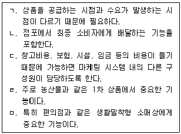
- ㄱ, ㄴ, ㄷ
- ㄱ, ㄷ, ㄹ
- ㄴ, ㄹ, ㅁ
- ㄷ, ㄹ, ㅁ
- ㄱ, ㄹ, ㅁ
(정답률: 46%)
54. 소매점포가 수행하는 전체 가치사슬(value chain)상의 활동 중 아래의 활동이 의미하는 것은?
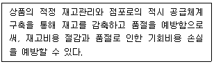
- 전략 기획
- 머천다이징
- 공급사슬관리
- 점포운영
- 지원프로세스
(정답률: 56%)
55. 무점포 소매상에 대한 설명으로 옳은 것은?(문제 오류로 가답안 발표시 5번으로 발표되었지만 확정답안 발표시 1, 5번이 정답처리 되었습니다. 여기서는 가답안인 5번을 누르시면 정답 처리 됩니다.)
- TV홈쇼핑은 TV라는 매스미디어를 활용하여 상품의 선택과 주문이 이루어지므로 통신판매에 속한다.
- 방문판매는 생산자가 직접 소비자를 방문하여 판매하는 방식으로 직접마케팅에 포함된다.
- 네트워크 마케팅을 통한 다단계 판매는 주로 온라인의 인적 네트워크를 통해 이루어지므로 인터넷마케팅에 해당된다.
- 인터넷 마케팅은 가상현실에서 해당사이트를 방문하는 방식으로 무점포 소매상에 해당하지 않는다.
- TV홈쇼핑에는 직접반응광고를 이용한 주문방식과 홈쇼핑채널을 이용한 주문방식을 포함한다.
(정답률: 55%)
56. 아래의 설명은 어떤 상품진열 유형에 대한 설명인가?
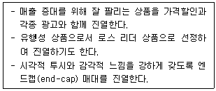
- 엔드(end) 진열
- 점포 내 진열
- 구매시점 진열
- 판매촉진 진열
- 고객중심 진열
(정답률: 46%)
57. 점포의 레이아웃에 대한 설명으로 가장 옳지 않은 것은?
- 고객이 상품을 쉽게 보고 구분하며 상품 선택이 용이하도록 설계하는 것이 기본이다.
- 고객의 흐름을 원활하게 구석구석까지 유도할 수있도록 통로가 설계되어야 한다.
- 고객을 위한 점포의 대로인 주통로에는 돌출진열을 하지 않는 것이 좋다.
- 상품군별로 상품의 품종을 구분할 수 있도록 설계한 보조통로를 갖추어야 한다.
- 수퍼마켓과 할인점 등과 같이 식품을 함께 판매하는 점포는 생식품을 보조통로에 배치한다.
(정답률: 56%)
58. 유통경로에서 제조업자가 제품을 촉진하기 위해 중간상에게 사용하는 푸시전략의 수단으로 옳지 않은 것은?
- 판촉지원금
- 신제품입점비
- 판매보조물
- 광고
- 특판과 캠페인
(정답률: 41%)
59. 전통적 대중매체 마케팅과 비교했을 때 CRM전략이 갖는 특성으로 옳지 않은 것은?
- 가격이 아닌 서비스를 통해 기업 경쟁력을 확보할 수 있다.
- 고객채널의 이용률을 개선함으로써 개별 고객과의 접촉을 최대한 활용할 수 있다.
- 특정 캠페인의 효과를 파악하기 용이하며 광고비를 절감할 수 있다.
- 특정 고객의 요구에 초점을 맞춤으로써 표적화가 더 용이하다.
- 고객의 세부욕구 만족을 위해 상품 개발과 출시에 소요되는 시간이 길어진다.
(정답률: 50%)
60. 항시염가정책(EDLP: everyday low price)과 비교하여 고저(High/Low) 가격정책이 가지는 특성으로 옳은 것은?
- 고저가격정책에서의 저가격은 다른 점포의 보통때 판매가격보다 저렴하지만 다른 점포의 할인 가격보다는 비싼 것이 일반적이다.
- 고저가격정책은 사실상 소매업자가 그들의 모든 상품과 서비스를 상당히 저가격에 판매하는 것을 말한다.
- 고저가격정책은 브랜드에 대한 고객의 상표 충실성과 점포 충실성을 높이며, 광고 비용을 줄여주는 장점이 있다.
- 고저가격정책은 백화점들이 주로 쓰는 가격정책으로 한정된 할인 품목을 구매하러 오게 하는 유인책이 된다.
- 고저가격정책은 규모의 경제가 달성 가능한 유통기업을 중심으로 대량 구매를 통해 연중 저가로 판매한다는 특성이 있다.
(정답률: 57%)
61. 상품관리전략의 개념에 대한 설명으로 옳지 않은 것은?
- 상품관리전략은 목표시장에서의 기업이 목적을 달성하기 위한 통제가능한 모든 마케팅 변수를 적절하게 배합하는 것을 의미한다.
- 상품믹스(product mix)란 소매상들이 그들의 고객들에게 제공하고자 하는 모든 상품이나 서비스를 의미한다.
- 상품의 다양성(variety)은 상품계열(product lines)의 수가 어느 정도 되는가를 의미한다.
- 상품 구색(assortment)은 소매점에서 취급하는 상품의 품목(item)수를 말한다.
- 상품 품목(item)은 상품계열 내에서 크기나 가격, 형태 등에 따라 명확히 구분되는 상품이다.
(정답률: 23%)
62. 소매경쟁의 유형 중 소매상과 도매상 혹은 소매상과 제조업자 간의 경쟁을 뜻하는 것은?
- 업태내 경쟁(intratype competition)
- 업태간 경쟁(intertype competition)
- 수직적 경쟁(vertical competition)
- 수평적 경쟁(horizontal competition)
- 시스템 경쟁(system competition)
(정답률: 69%)
63. 단품관리를 통해 기대할 수 있는 직접적인 효과로 거리가 먼 것은?
- 인기상품 발견 및 결품 최소화
- 비인기 상품의 판촉 방안 확보
- 작업 및 매대 생산성 증가
- 책임 소재의 명확성
- 교차판매비율의 증가
(정답률: 45%)
64. 제조업자가 유통업자에게 제공하는 프로그램의 짝으로 올바르게 연결된 것은?
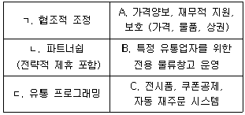
- ㄱ-A, ㄴ-B, ㄷ-C
- ㄱ-A, ㄴ-C, ㄷ-B
- ㄱ-B, ㄴ-C, ㄷ-A
- ㄱ-C, ㄴ-B, ㄷ-A
- ㄱ-B, ㄴ-A, ㄷ-C
(정답률: 11%)
65. 판매원 관리에 관한 설명으로 옳지 않은 것은?
- 거래지향적 판매는 듣기보다는 말하는 데에 치중하는 반면, 관계지향적 판매는 듣는데에 보다 치중한다.
- 거래지향적 판매는 판매에 초점을 두는 반면, 관계지향적 판매는 판매보다 고객욕구를 이해하는데 초점을 둔다.
- 판매원 보상에는 고정급과 성과급이 있으며, 혼합형은 이 둘을 절충한 형태이다.
- 판매원의 동기부여에는 성과급이 최상이며, 대부분의 판매원은 이 제도를 선호한다.
- 판매원 평가는 재무기준과 마케팅기준을 병행하는 것이 바람직하다.
(정답률: 60%)
66. 사인물(signage)의 효과적 기술에 대한 설명으로 가장 옳지 않은 것은?
- 사인과 그래픽을 매장 이미지와 조화시켜야 한다.
- 정보를 전달하는 사인과 그래픽은 고객 욕구를 자극시켜야 한다.
- 생생한 그래픽과 사인으로 점포 이미지와 어울리는 테마를 연출해야 한다.
- 소비자의 관심을 끌기 위해 사인은 가급적 많은 글자를 통해 정보를 제공하여야 한다.
- 상품이 바뀌면 사인과 그래픽을 상품과 조화되도록 갱신하여야 한다.
(정답률: 77%)
67. 유통시스템 전반의 효과성 및 효율성 평가의 짝으로 잘못 연결된 것은?
- 효과성-신규대리점의 수와 비율
- 효과성-신시장 개척건수
- 효율성-단위당 수송비
- 효율성-중간상의 거래전환건수
- 효과성-수요예측의 정확성
(정답률: 38%)
68. 소매상이 수행하는 환경분석 중 내적인 요인에 대한 분석에 해당하지 않는 것은?
- 재무적 자원에 대한 평가
- 물리적 자산에 대한 측정
- 취급하는 상품에 대한 분석
- 고객 욕구의 변화에 대한 파악
- 조직에 대한 종업원의 태도 분석
(정답률: 56%)
69. 제조업자들의 가격전략에서 문제를 일으키는 설명들이다. 올바르게 짝지어진 것은?
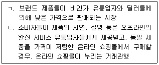
- ㄱ-난매시장, ㄴ-복수경로
- ㄱ-회색시장, ㄴ-무임승차
- ㄱ-회색시장, ㄴ-복수경로
- ㄱ-난매시장, ㄴ-기회주의
- ㄱ-비허가시장, ㄴ-기회주의
(정답률: 18%)
70. 혁신적인 신제품이 주류시장(majority)의 소비자들에게 선택받지 못하고 실패하는 현상을 의미하는 용어는?
- 자기잠식
- 캐즘(chasm)
- 웨버(Weber)의 법칙
- 진입장벽
- 손실회피
(정답률: 53%)
4과목: 유통정보
71. 사용자추적 프로그램으로 방문자가 들어간 사이트의 기록을 저장하여 웹운영자에게 고객 식별 및 사이트에서 행하는 고객들의 행동을 쉽게 이해할 수 있도록 정보를 제공하는 프로그램을 뜻하는 것으로 가장 옳은 것은?(문제 오류로 가답안 발표시 2번으로 발표되었지만 확정답안 발표시 모두 정답처리 되었습니다. 여기서는 가답안인 2번을 누르면 정답 처리 됩니다.)
- 로그파일(Log-file)
- 쿠키(Cookies)
- 텔넷(Telnet)
- 고퍼(Gopher)
- 아크로벳(Acrobat)
(정답률: 80%)
72. 채찍효과(Bullwhip Effect)를 감소시키거나 영향력을 제거하기 위한 방안으로 가장 옳지 않은 것은?
- 공급체인상의 당사자간에 일정한 주문량으로 장기간 계약을 맺는다.
- 공급체인상의 수요정보를 중앙집중화하여 관리함으로써 불확실성을 제거한다.
- 주문-생산-배송 리드타임(Lead time)을 지속적으로 단축시켜 안정화한다.
- 인터넷 기반 서비스를 활용하여 공급체인상의 수요정보를 실시간으로 공유한다.
- 공급체인 상에서 풀전략(Pull strategy)이나 VMI방법 등으로 제품재고를 관리한다.
(정답률: 29%)
73. 코리안넷의 주요 기능으로 가장 옳지 않은 것은?
- 상품정보 및 등록관리
- 유통업체 상품정보 전송
- 국내 유통상품 조회
- 유통업체 매대관리
- 자사 상품 홍보
(정답률: 41%)
74. 협의의 MIS(Management Information System)와 ERP(Enterprise Resource Planning)에 대한 비교설명으로 가장 옳지 않은 것은?
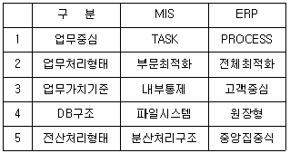
- 1
- 2
- 3
- 4
- 5
(정답률: 27%)
75. 개인 정보의 오남용을 막기 위해 기업이 지켜야 할 규칙으로 가장 옳지 않은 것은?
- 정보를 제공하는 고객에게 특정 목적 외에는 사용하지 않을 것이며, 다른 목적으로 사용시에는 개인의 동의 없이는 사용하지 않을 것임을 알려줘야 한다.
- 개인정보 수집의 원래 목적과 관련 없는 정보는 수집해서는 안된다.
- 기업은 허용된 기간만큼만 개인정보를 보관해야 한다.
- 수집된 정보는 허용된 사람에게만 접근 가능토록 해야 한다.
- 개인정보는 현재보다는 미래에 활용 가능해야 한다.
(정답률: 63%)
76. 거래처리시스템의 특징을 설명한 것으로 가장 옳지 않은 것은?
- 조직의 일상적인 거래처리를 행한다.
- 문제해결이나 의사결정을 지원하지 않는다.
- 대부분 실시간으로 처리해야 하기 때문에 비교적 짧은 시간에 많은 양의 자료를 처리한다.
- 기업의 운영 현황에 관한 정보를 관리한다.
- 시스템 구축 목적에 맞게 드릴다운(Drill-Down)기법과 같은 정보제공 기능이 반드시 지원되어야 한다.
(정답률: 40%)
77. 인터넷과 유통물류 등의 발달로 20:80의 집중현상에서 발생확률이나 발생량이 상대적으로 적은 부분(80부분)도 경제적으로 의미가 있게 되었다는 것으로 아마존닷컴이 다양한 서적을 판매한 사례를 갖고 있는 법칙을 무엇이라 하는가?
- 무어법칙
- 파레토법칙
- 롱테일법칙
- 메트칼프법칙
- 하인리히 법칙
(정답률: 39%)
78. 데이터 웨어하우스(DW)의 특징으로 가장 옳지 않은 것은?
- 고객, 벤더, 제품, 가격, 지역 등 기업에서 다양하게 활용할 수 있도록 주제 중심적으로 또는 비즈니스 차원으로 정렬한다.
- 데이터 웨어하우스에 일단 데이터가 적재되면 일괄 처리(batch) 작업에 의한 갱신 이외에는 삽입이나 삭제 등의 변경이 수행되지 않는 특징을 가진다.
- 데이터는 추세, 예측, 연도별 비교분석 등을 위해 다년간 시계열적으로 축적·보관된다.
- 다른 데이터베이스로부터 추출된 데이터는 고유의 특성을 살리기 위해 표준화 등의 과정을 통한 변환이 일어나지 않도록 각각 다른 코드화 구조를 가진다.
- 데이터베이스는 통상 거래를 다루므로 거래 발생 즉시 온라인으로 처리되는 OLTP가 사용되고, 의사결정을 지원하는 DW는 축적된 데이터를 분석하는 OLAP를 사용한다.
(정답률: 23%)
79. SCM(Supply Chain Management) 추진성과측정 기법 중 내부적 관점(기업측면)에서는 비용과 자산측면을, 외부적 관점(고객측면)에서는 유연성, 반응성, 신뢰성을 통하여 추진 성과를 측정하는 방법론으로 옳은 것은?
- EVA(Economic Value-Added)
- CVAR(Customer Value-Added Ratio)
- CLV(Customer Lifetime Value)
- SCOR(Supply Chain Council & Supply Chain Operation Reference)
- BSC(Balance Score Card)
(정답률: 47%)
80. 정보를 환경정보와 기업정보 그리고 내부정보로 분류할 때, 기업정보와 가장 거리가 먼 것은?
- 기업문화
- 상표이미지
- 마케팅 노하우
- 기업이미지
- 유통채널
(정답률: 19%)
81. 유통정보시스템의 구축 과정을 기획 단계, 기술적 구현단계, 실무도입 단계로 나누어 볼 때, 기술적 구현 단계와 관련성이 가장 적은 것은?
- 네트워크 및 데이터베이스 등을 구축한다.
- 유통정보시스템의 문제점 파악 및 개선 작업을 한다.
- 유통정보시스템 시험 가동 및 시범 서비스를 수행한다.
- 유통정보시스템 통제 방안을 마련한다.
- 유통정보시스템 분석 및 설계를 한다.
(정답률: 28%)
82. EPC에는 사용 목적에 따라 코드 유형이 정의되어 있는데, 다음 중 회수/재활용 자산에 사용되는 EPC 관련 코드는 무엇인가?
- GTIN
- SSCC
- GRAI
- GSRN
- GDTI
(정답률: 13%)
83. 데이터 웨어하우스의 등장 배경으로 가장 옳지 않은 것은?
- 의사결정을 위한 정보 수요의 폭증과 과거의 이력데이터의 중요성이 부각되었다.
- 의사결정을 하는데는 기업 내의 다른 부서, 다른 시스템, 다양한 방식으로 보관된 데이터에 접근하여 다양한 종류의 질적 수행이 가능한 환경의 필요성이 높아졌다.
- 신속하고 즉각적인 의사결정을 위해서는 단기적인 데이터 관리가 필요해졌다.
- 각기 구축된 데이터베이스가 운용되고 시간이 지날수록 그 크기가 커짐에 따라 이를 효과적으로 운용할 수 있는 새로운 형태의 통합된 데이터 저장소가 필요해졌다.
- 고객의 다양한 요구와 환경변화에 신속하게 대응하기 위해 일상업무 지원뿐만 아니라 데이터 분석이나 의사결정을 지원하는 기업의 전략적 정보 기반 구축이 필요해졌다.
(정답률: 62%)
84. 박스 안의 설명에 해당하는 가장 적절한 용어는?
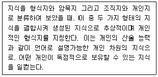
- 체화지
- 개념지
- 문화지
- 명시지
- 사실지
(정답률: 31%)
85. 박스 안의 설명에 가장 적합한 의사결정지원시스템의 분석기법은?
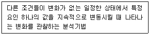
- what-if 분석
- 민감도 분석
- 목표추구 분석
- 최적화 분석
- 가치 분석
(정답률: 48%)
86. 라파(Rappa, 2000)가 제시한 비즈니스 모델 중 박스 안의 설명에 가장 적합한 모델은?
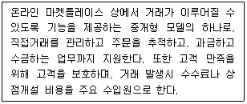
- 메타중개
- 경매중개
- 역경매
- 고객모집형
- 시장거래소
(정답률: 41%)
87. CRM의 기능을 운영, 분석, 협업적으로 나누어 볼 때, 협업적 CRM 기능에 해당되는 것은?
- 다양한 고객 접점에서 생성된 정보를 통합하고 분류하는 기능을 수행한다.
- 분석적 CRM에서 산출된 분석 결과를 관리하는 기능을 수행한다.
- 교차판매와 상승판매 기능을 수행한다.
- In-bound call 및 Out-bound call 기능을 수행한다.
- 데이터 웨어하우스 내의 자료를 추출하여 분석한 것을 기반으로 마케팅 모델을 만든다.
(정답률: 17%)
88. 서울에서 인터넷 쇼핑몰을 운영하는 기업이 있다고 하자. 하루 분량의 주문 중에서 광주로 가는 배송분량이 일정수준을 넘게 되면, 서울에서 택배를 통하여 각 가정으로 일일이 배송하는 것보다 FTL을 이용하여 광주의 택배기지까지 수송한 후에 그곳에서 택배를 통하여 각 가정으로 배송하기도 한다. FTL(Full Truck Load : 만차수송) 화물을 만드는 방법론의 하나인 이것을 무엇이라 하는가?
- 시간상 병합
- 판매자 혹은 구매자간 병합
- 생산자 직접배송
- 구역 건너뛰기
- 경로 최적화
(정답률: 17%)
89. 서로 다른 웹사이트의 콘텐츠나 서비스를 조합하여 새로운 차원의 콘텐츠나 웹사이트 혹은 웹 어플리케이션을 창출하는 것을 의미하는 용어는?
- 매시업
- RSS(Rich Site Summary)
- 마이크로블로깅
- 시멘틱웹
- 폭소노미
(정답률: 44%)
90. e-비즈니스의 특징으로 가장 옳지 않은 것은?
- 지식, 아이디어가 중요하고 1인 기업이 가능하다.
- 기업과 소비자간 직접 판매 방식으로 유통채널을 단축시켜 비용을 절감할 수 있다.
- 매체의 특성상 한정적인 재화만을 취급한다.
- 가상공간에서 정보기술을 활용하여 고객과의 양방향 커뮤니케이션이 가능하다.
- 전 세계를 대상으로 24시간 국제적인 영업이 가능하다.
(정답률: 72%)